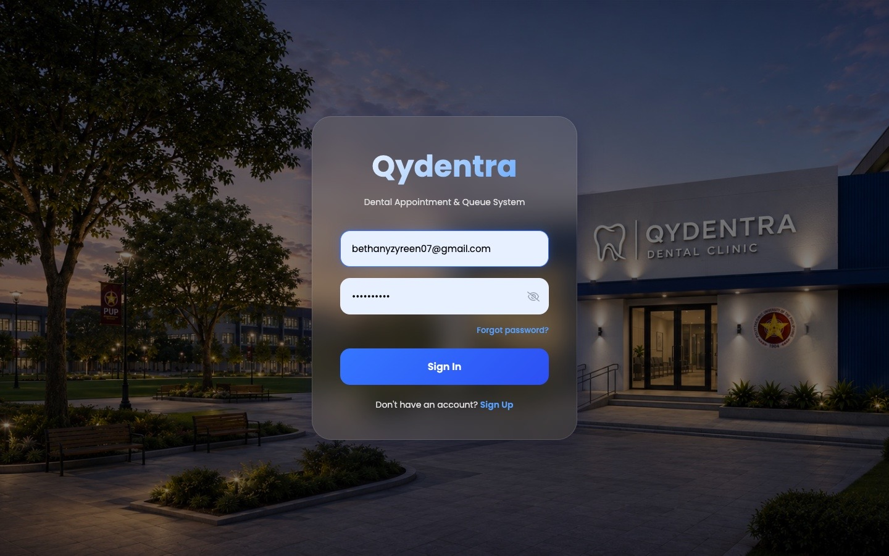
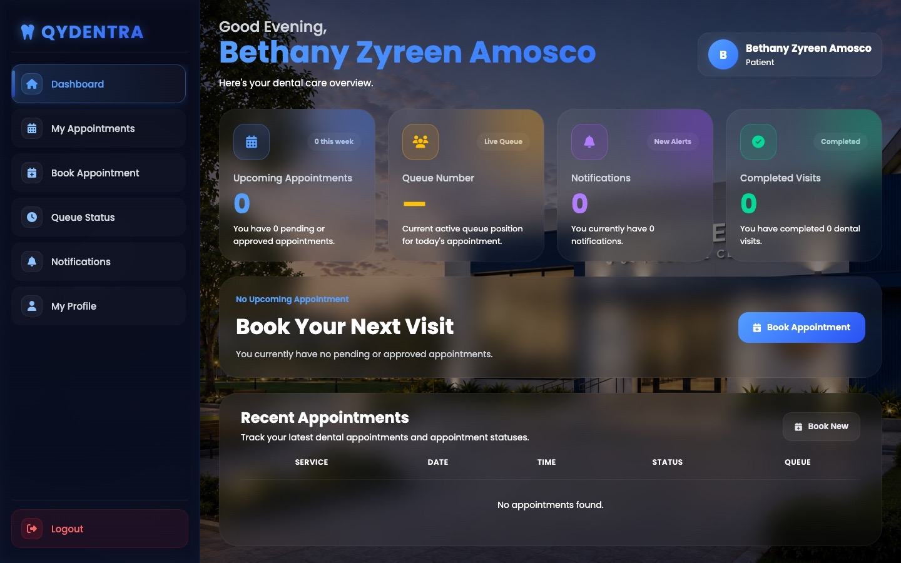
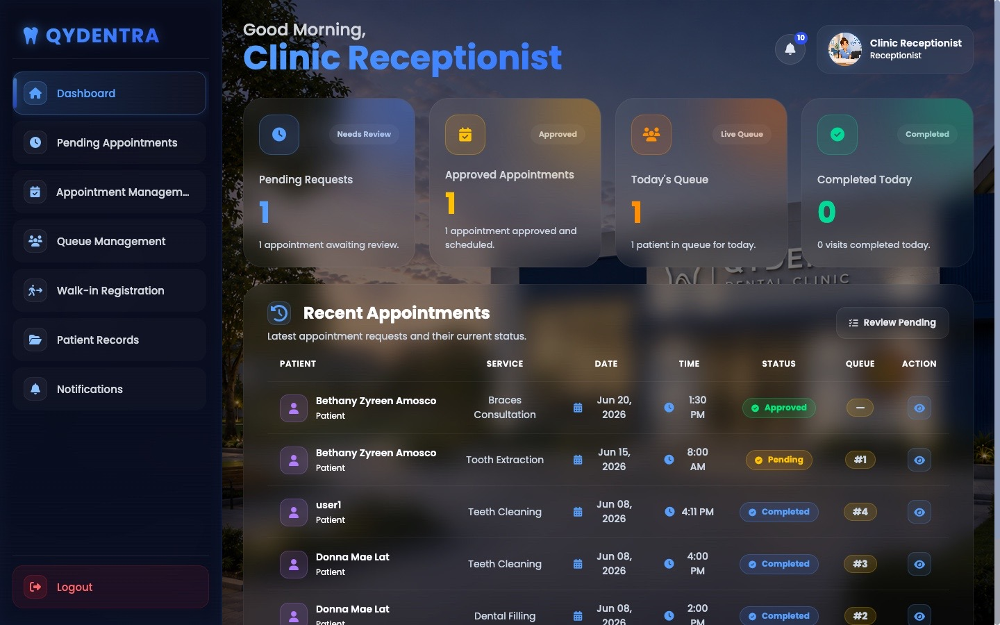
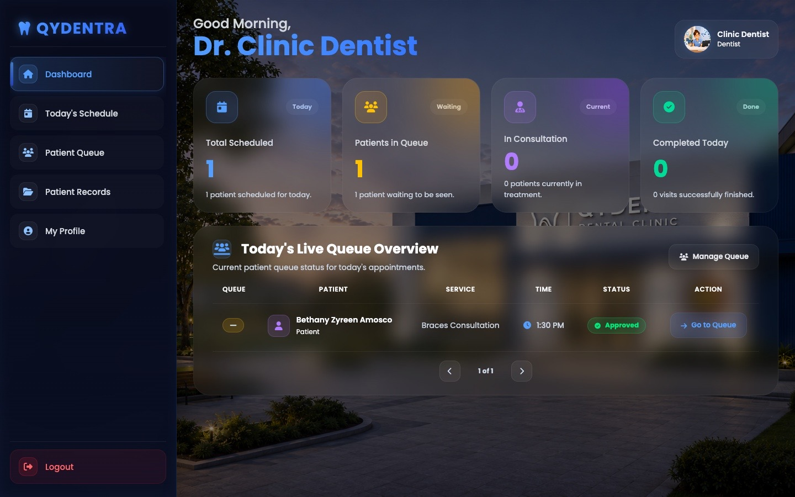
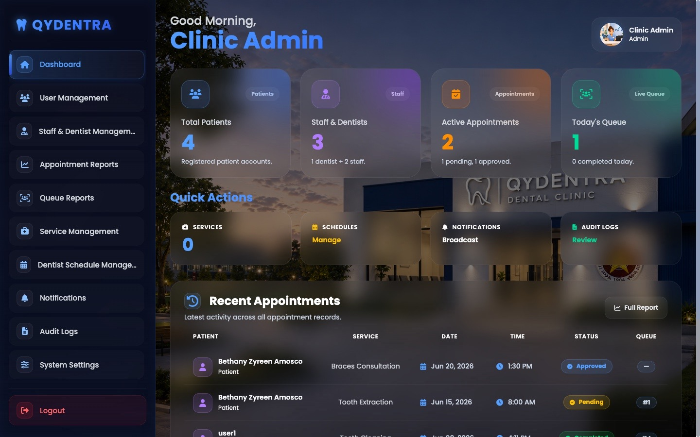

App Screenshots






Dental Clinic Management System
"Smarter Scheduling, Smoother Smiles"
Qydentra was built as an IPT project to serve a full dental clinic team, with separate dashboards for Admin, Dentist, Receptionist, and Patient — each tailored to the tasks that role actually needs to perform.
Patients can book appointments online, while the clinic manages a live, real-time queue so walk-ins and scheduled visits stay organized without the usual front-desk chaos.
A full-stack system built with PHP, HTML, JavaScript, CSS, and a MySQL database, giving the clinic a reliable backend for storing patient records, staff data, and appointment history.
Every important action is tracked through audit logging, and a notification system with custom-prefixed IDs keeps staff and patients informed without confusion between record types.





Admin, Dentist, Receptionist, and Patient accounts each see a dashboard built around their own responsibilities, from clinic-wide oversight down to a patient's own appointment history.
A live queue system keeps track of who's next, reducing waiting-room guesswork for both patients and the front desk.
Patient history, treatment notes, and personal details are stored securely and stay easy for dentists and staff to access when they need them.
Admins can manage dentist and receptionist accounts, keeping the clinic's staffing information centralized and up to date.